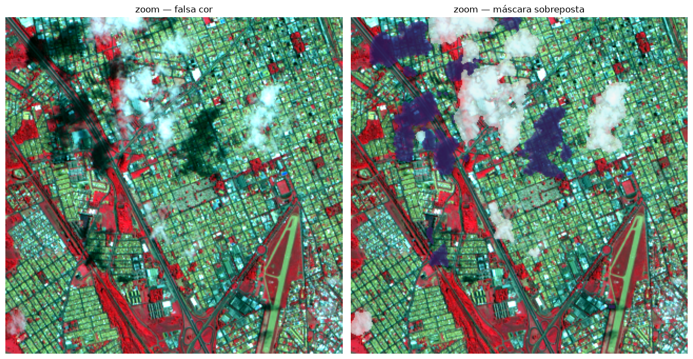

Aula 02 — Detecção de nuvem e sombra com OmniCloudMask
Nessa aula, vamos utilizar o OmniCloudMask para detectar nuvens e sombras na cena de 2 m que geramos na Aula 01. O resultado é uma máscara georreferenciada que indica quais pixels estão cobertos por nuvem ou sombra, e é ela que a Aula 03 vai usar para saber quais pixels precisam ser substituídos.
O OmniCloudMask (OCM) (Wright et al., 2025) é uma rede neural convolucional treinada com cenas de vários sensores para separar quatro classes:
valor
classe
o que é
0
clear
céu limpo, pixel utilizável
1
thick_cloud
nuvem espessa, opaca
2
thin_cloud
nuvem fina (cirros), que deixa passar parte do sinal da superfície
3
cloud_shadow
sombra projetada pela nuvem
Ele usa só três bandas (vermelho, verde e infravermelho próximo) e é agnóstico ao sensor: não foi treinado com o CBERS-4A e mesmo assim funciona, porque aprendeu as características espectrais e a textura das nuvens, e não as particularidades de um satélite. Isso é possível porque o OCM foi treinado com um conjunto de dados enorme, com imagens de vários sensores e resoluções e de todo o mundo (para mais detalhes, consulte Wright et al., 2025).
Detalhe importante: apesar de ser bastante robusto, o modelo ainda erra. Algumas sombras de nuvem podem passar despercebidas e algumas nuvens finas podem ser confundidas com alvos claros.
Preparando o ambiente
No pixi local, a célula seguinte não faz nada: o pixi install já trouxe tudo.
No Colab, ela instala as bibliotecas pelo pip, sem conda e sem reiniciar a sessão. Esta aula não precisa do 6S, porque parte do pansharpening_*.tif que a Aula 01 gravou no seu Drive. E o PyTorch continua sendo o que já vem no Colab: a célula só acrescenta o torchvision da mesma versão e da mesma variante (CPU ou GPU) dele. Um torchvision de outra versão ou compilação não carrega e derruba o OmniCloudMask com o erro operator torchvision::nms does not exist.
Se você começar por esta aula sem ter feito a Aula 01, o atalho refaz as aulas anteriores em TOA (sem o 6S), e avisa. A detecção de nuvem funciona nos dois níveis.
In [1]:
# --- Colab: instala as bibliotecas na sessão (sem conda, sem reinício) ---import sysNO_COLAB ="google.colab"in sys.modulesprint("Ambiente:", "Google Colab"if NO_COLAB else"local (pixi/Jupyter)")if NO_COLAB:import importlib.metadata as md# torchvision casado com o torch do Colab: torch 2.X -> torchvision 0.(X+15),# baixado do índice do PyTorch da mesma variante (ex.: +cpu, +cu126). torch_v = md.version("torch") # ex.: 2.11.0+cpu base, _, variante = torch_v.partition("+") tv_v =f"0.{int(base.split('.')[1]) +15}.*" indice =f"--extra-index-url https://download.pytorch.org/whl/{variante}"if variante else""print(f"torch do Colab: {torch_v} -> torchvision {tv_v}")!pip install -q "torchvision=={tv_v}" {indice}!pip install -q omnicloudmask pystac-clientprint("pronto")
Ambiente: local (pixi/Jupyter)
Módulo de apoio e imports
Baixa o aulas_cbers.py e a pasta config/ do repositório (se ainda não estiverem na pasta) e importa as bibliotecas da aula.
Aqui definimos os parâmetros da aula e o arquivo de entrada (o pansharpening da Aula 01). Se ele não existir, a célula refaz sozinha as Aulas 00 e 01 com ac.preparar_aula_02().
O DETECT_RES, a resolução em que a detecção acontece, é a decisão mais importante desta aula, e a próxima seção explica por quê.
In [4]:
CENA_ID = ac.CENA_PADRAONIVEL ="boa"# tem que casar com o que você gerou na Aula 01DETECT_RES =10.0# resolução (m) em que a detecção aconteceBANDA_RED, BANDA_GREEN, BANDA_NIR =1, 2, 4# ordem RGBN do produto da Aula 01PATCH, OVERLAP =1000, 300# janelamento interno do OCMNODATA = ac.NODATACLASSES = ac.CLASSES_OCMNODATA_MASCARA =255# 255 = fora do dado, nas máscaras de saída# No Colab, os dados ficam no seu Google Drive, na mesma pasta em que a Aula 00# gravou (MyDrive/geoprocessamento-cbers4a/data), e não se perdem quando a# sessão encerra. Localmente não faz nada. USAR_DRIVE = False usa /content/data.USAR_DRIVE =Trueif USAR_DRIVE: ac.usar_drive()P = ac.pastas()DATA = ac.data_da_cena(CENA_ID)entrada = P["interim"] /f"pansharpening_{DATA}_{NIVEL}.tif"ifnot entrada.exists():# atalho para quem começou o curso por esta aula: refaz Aula 00 + Aula 01 r = ac.preparar_aula_02(CENA_ID, NIVEL) NIVEL, entrada = r["nivel"], Path(r["pansharpening"])with rasterio.open(entrada) as src:print(f"entrada : {entrada.name}")print(f" {src.width} x {src.height} px @ {src.res[0]:g} m | {src.dtypes[0]}")print(f"bandas : {src.descriptions}")print(f"nodata : {src.nodata} | CRS: {src.crs}")
1. Por que detectar em 10 m, e não nos 2 m nativos
Por três motivos:
O OCM foi validado na faixa de 10 a 50 m. Fora dela o desempenho cai: a rede aprendeu a reconhecer a nuvem numa determinada escala de textura, e em 2 m ela vê detalhe demais;
A nuvem é um objeto grande. A borda de uma nuvem não é nítida em nenhuma escala, existe uma faixa de transição de dezenas de metros. Detectar em 2 m não deixa a borda mais correta, só mais ruidosa;
Custo. São 16 vezes menos pixels para a rede processar.
A máscara sai em 10 m e depois volta para a grade de 2 m por vizinho mais próximo, que é o único método de reamostragem adequado para dados categóricos.
Na célula abaixo, a cena é lida já reduzida para 10 m (pela média dos pixels), nas três bandas que o OCM usa, e os pixels sem dado são marcados para o modelo ignorar.
In [5]:
with rasterio.open(entrada) as src: nativo = {"transform": src.transform, "crs": src.crs,"height": src.height, "width": src.width, "res": src.res[0]} escala = src.res[0] / DETECT_RES h =max(1, int(round(src.height * escala))) w =max(1, int(round(src.width * escala)))# bandas na ordem exigida pelo OCM: Red, Green, NIR det = src.read([BANDA_RED, BANDA_GREEN, BANDA_NIR], out_shape=(3, h, w), resampling=Resampling.average).astype("float32")# Validade. Duas coisas acontecem aqui, e vale saber a diferença:# - a média do GDAL IGNORA os pixels de nodata, então um bloco de 10 m que# cai meio em cima da borda sai com a média só do que existe, sem# contaminação. Bom: não perdemos a borda.# - o que a média não diz é ONDE não sobrou nada. Para isso lemos a MÁSCARA# do arquivo (255 onde há dado, 0 onde não há), reduzida do mesmo jeito:# ela zera só nos blocos inteiramente sem dado.# O teste extra em det é cinto e suspensório, caso alguma versão do GDAL# espalhe o -9999 pela média em vez de ignorá-lo. mascara = src.read_masks(1, out_shape=(h, w), resampling=Resampling.average) t_det = src.transform * Affine.scale(src.width / w, src.height / h)valido = (mascara >=255) & np.all(det >-5000, axis=0)det[:, ~valido] =0.0# o OCM ignora estes pixels (no_data_value=0)print(f"grade de detecção : {w} x {h} px @ {DETECT_RES:g} m")print(f"pixels válidos : {valido.sum():,} ({valido.mean():.2%})")
grade de detecção : 1291 x 1394 px @ 10 m
pixels válidos : 1,799,637 (100.00%)
2. Rodando o OmniCloudMask
Na primeira execução, o OCM baixa os pesos do modelo pelo Hugging Face (HF). Ele processa a imagem em blocos de PATCH pixels, com OVERLAP de sobreposição, e faz a média nas emendas. Ao final, a célula mostra quantos pixels caíram em cada classe.
In [6]:
Tabela 1
import torchfrom omnicloudmask import predict_from_arrayprint("dispositivo:", "GPU (cuda)"if torch.cuda.is_available() else"CPU")mask = predict_from_array( det, patch_size=PATCH, patch_overlap=OVERLAP, no_data_value=0, apply_no_data_mask=True, model_download_source="hugging_face",)mask = np.squeeze(np.asarray(mask)).astype("uint8")mask = np.where(valido, mask, NODATA_MASCARA).astype("uint8")total =int(valido.sum())print("\n--- composição da cena (pixels válidos, grade de detecção) ---")for c, nome in CLASSES.items(): n =int(np.count_nonzero((mask == c) & valido))print(f" {c}{nome:<13}: {n:>10,} ({100* n /max(total, 1):5.1f} %)")contaminado =int(np.count_nonzero(np.isin(mask, [1, 2, 3]) & valido))print(f" -> nuvem + sombra: {contaminado:>10,} ({100* contaminado /max(total, 1):5.1f} %)")print(f" -> utilizável : {total - contaminado:>10,} "f"({100* (total - contaminado) /max(total, 1):5.1f} %)")
<ambiente>/.../site-packages/tqdm/auto.py:21: TqdmWarning: IProgress not found. Please update jupyter and ipywidgets. See https://ipywidgets.readthedocs.io/en/stable/user_install.html
from .autonotebook import tqdm as notebook_tqdm
Nenhuma máscara de nuvem é perfeita, e a hora de encontrar os erros é agora. As duas células abaixo mostram a falsa cor e a máscara lado a lado, e depois um zoom na maior mancha de nuvem.
O que conferir:
sombra deslocada: a sombra fica do lado oposto ao Sol em relação à nuvem. Se a classe 3 aparecer do lado errado, alguma banda está trocada na entrada;
nuvem fina confundida com alvo claro: telhado metálico, areia e pátio de concreto às vezes entram como classe 2, o que é mais comum em áreas urbanas;
borda: uma faixa de classe 2 em volta da nuvem espessa é esperada, pois é a transição real, e é melhor que ela entre na máscara do que fique de fora;
água: corpos d’água escuros às vezes são classificados como sombra. Se a sua AOI tem represa, olhe com atenção.
Figura 1: Falsa cor e a máscara do OmniCloudMask, lado a lado.
In [8]:
# zoom na maior mancha de nuvem, para conferir a borda de pertonuvem = np.isin(mask, [1, 2])if nuvem.any(): ys, xs = np.nonzero(nuvem) cy, cx =int(ys.mean()), int(xs.mean()) lado =min(160, h //2, w //2) y0 =max(0, min(h -2* lado, cy - lado)) x0 =max(0, min(w -2* lado, cx - lado)) fatia = (slice(y0, y0 +2* lado), slice(x0, x0 +2* lado)) fig, ax = plt.subplots(1, 2, figsize=(13, 6.6)) ax[0].imshow(falsa_cor[fatia]) ax[0].set_title("zoom — falsa cor") ax[1].imshow(falsa_cor[fatia]) ax[1].imshow(np.where(np.isin(mask[fatia], [1, 2, 3]), mask[fatia], np.nan), cmap=cores, norm=norma, alpha=0.55) ax[1].set_title("zoom — máscara sobreposta")for a in ax: a.axis("off") plt.tight_layout(); plt.show()else:print("Nenhum pixel de nuvem detectado nesta cena.")print("Para as Aulas 02 e 03 fazerem sentido, escolha na Aula 00 uma cena com nuvem ""sobre a AOI (a coluna 'nuvens_est_%' da tabela de diagnóstico ajuda).")

Figura 2: Zoom na maior mancha de nuvem, com a máscara sobreposta.
4. Gravando as máscaras
São três arquivos, cada um com um papel:
_cloudmask_10m.tif: a máscara na grade em que a rede decidiu, útil para conferir o resultado;
_cloudmask_native.tif: a mesma máscara levada para os 2 m da cena, por vizinho mais próximo. É a que a Aula 03 usa, e ela precisa estar exatamente na grade do CBERS;
_clearmask_native.tif: versão binária (1 = utilizável), prática para multiplicar por outros rasters.
Agora gravamos uma cópia da cena em que os pixels de nuvem e de sombra viram nodata (e não zero). Um pixel zerado entraria nas estatísticas puxando a média para baixo; como nodata, ele é ignorado pelo rasterio, pelo QGIS e pelo AROSICS, que não vai tentar achar pontos de amarração dentro da área removida.
A gravação é feita em faixas de 2.048 linhas, para não ocupar muita memória. A figura seguinte compara a cena antes e depois.
In [10]:
mascarada = P["interim"] /f"{stem}_masked.tif"nublado = np.isin(nativa, [1, 2, 3])with rasterio.open(entrada) as src: perfil = src.profile.copy() nd = src.nodata if src.nodata isnotNoneelse NODATAfor k in ("blockxsize", "blockysize", "tiled", "interleave"): perfil.pop(k, None) perfil.update(nodata=nd, compress="deflate", predictor=2, tiled=True, blockxsize=512, blockysize=512, BIGTIFF="IF_SAFER", interleave="band") descr = src.descriptionswith rasterio.open(mascarada, "w", **perfil) as dst:for b inrange(1, src.count +1):for r0 inrange(0, src.height, 2048): nr =min(2048, src.height - r0) jan = Window(0, r0, src.width, nr) dados = src.read(b, window=jan) dados[nublado[r0:r0 + nr, :]] = nd dst.write(dados, b, window=jan) dst.set_band_description(b, descr[b -1] or ac.NOMES_SAIDA[b -1]) dst.update_tags(MASCARA=str(cam_nat.name), CLASSES_MASCARADAS="1,2,3")print(f"Escrito: {mascarada.name} ({mascarada.stat().st_size /1024**2:.1f} MB)")
# antes x depois, em resolução reduzidawith rasterio.open(mascarada) as src: fator =max(1, src.width //800) forma = (src.height // fator, src.width // fator) dep = src.read((1, 2, 3), out_shape=(3,) + forma, resampling=Resampling.average).astype("float32")with rasterio.open(entrada) as src: ant = src.read((1, 2, 3), out_shape=(3,) + forma, resampling=Resampling.average).astype("float32")for arr in (ant, dep): arr[arr <=-9000] = np.nanfig, ax = plt.subplots(1, 2, figsize=(15, 7.5))ax[0].imshow(np.dstack([ac.stretch(b) for b in ant]))ax[0].set_title("Aula 01 — cena fusionada")ax[1].imshow(np.dstack([ac.stretch(b) for b in dep]))ax[1].set_title("Aula 02 — nuvem e sombra removidas (as lacunas da Aula 03)")for a in ax: a.axis("off")plt.tight_layout(); plt.show()
Figura 3: A cena antes e depois de nuvem e sombra virarem nodata.
6. Vale a pena preencher?
Se a nuvem cobre 1% da AOI, muitas vezes compensa descartar esses pixels e seguir. Se cobre 25%, descartar significa perder um quarto da área, e aí a substituição com Sentinel-2 super-resolvido compensa o trabalho.
Não existe um limiar universal: a decisão é sua. A célula abaixo grava no .params.json, ao lado da máscara, a fração contaminada, a área em hectares e a composição por classe, para que ela fique registrada.
Entre descartar e preencher com outro sensor, o cenário ideal é compor com outra data do próprio CBERS, se você tiver uma cena próxima e limpa naquela área. Assim, a radiometria e a resolução continuam as mesmas, sem precisar de super-resolução.
contaminado por nuvem/sombra: 11.26% da cena (2,026 ha)
Params: pansharpening_20260301_boa_cloudmask_native.params.json
O que ficou pronto
data/interim/pansharpening_<DATA>_<nivel>_cloudmask_10m.tif máscara na grade de detecção
data/interim/pansharpening_<DATA>_<nivel>_cloudmask_native.tif máscara em 2 m <- Aula 03
data/interim/pansharpening_<DATA>_<nivel>_clearmask_native.tif binária, 1 = utilizável
data/interim/pansharpening_<DATA>_<nivel>_masked.tif cena com lacunas <- Aula 03
Na Aula 03, essas lacunas são preenchidas com Sentinel-2 levado de 10 m para 2,5 m pelo SEN2SR, corregistrado com o CBERS pelo AROSICS e ajustado radiometricamente antes da substituição.
Referências
WRIGHT, N.; DUNCAN, J. M. A.; CALLOW, J. N.; THOMPSON, S. E.; GEORGE, R. J. Training sensor-agnostic deep learning models for remote sensing: achieving state-of-the-art cloud and cloud shadow identification with OmniCloudMask. Remote Sensing of Environment, v. 322, 114694, 2025. DOI: 10.1016/j.rse.2025.114694.